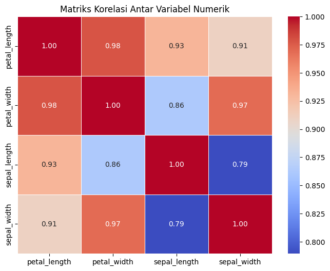
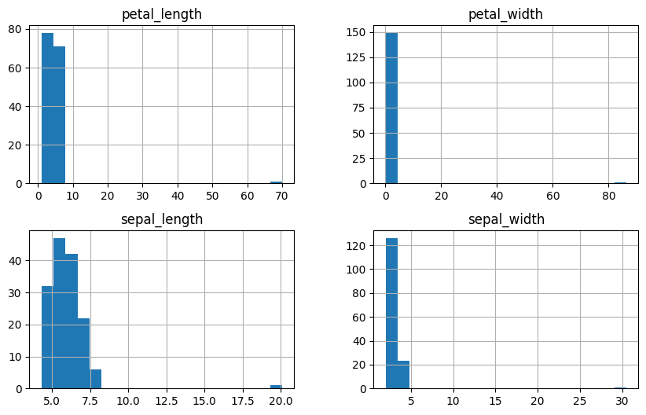
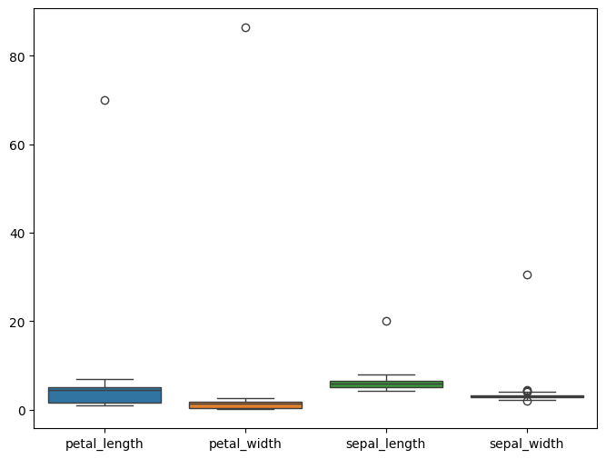
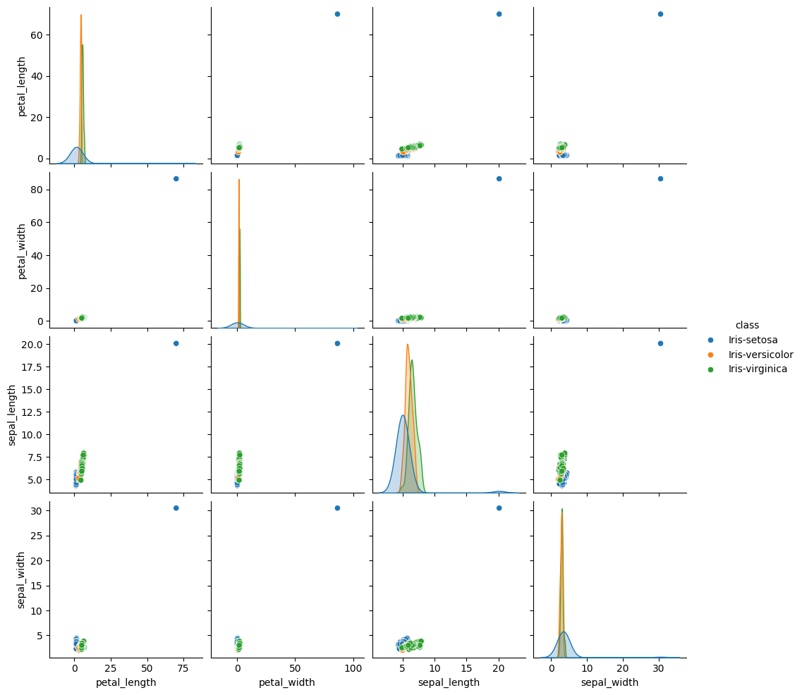
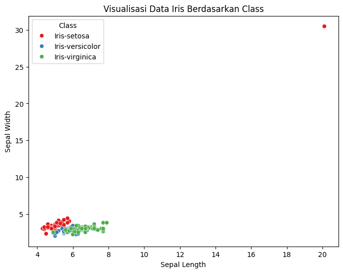
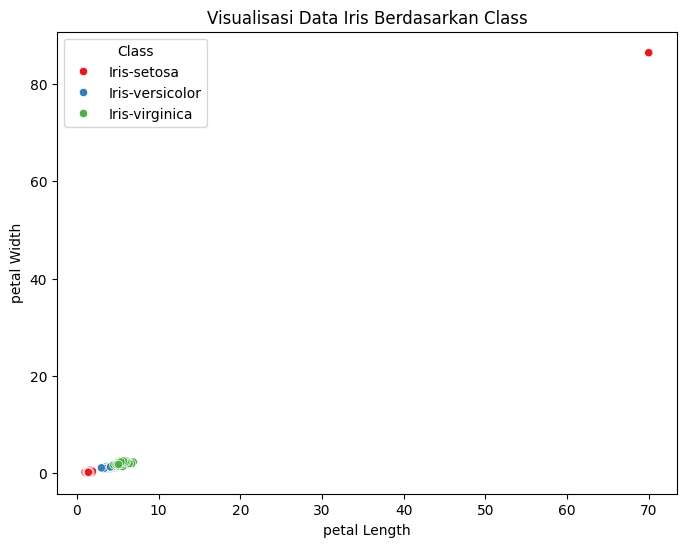
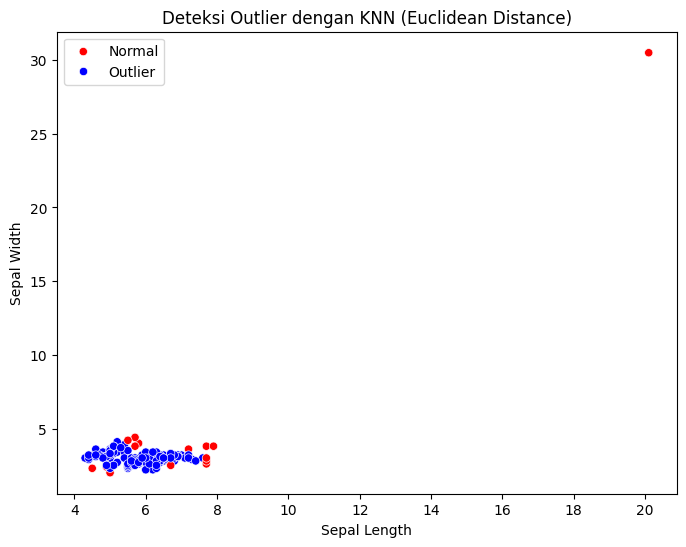

Data Understanding(Memahami Data)#
Data understandung dalam data mining
Data Understanding adalah salah satu tahap penting dalam proses Knowledge Discovery in Databases (KDD) atau Data Mining. Ini merupakan langkah awal yang bertujuan untuk memahami data secara mendalam sebelum melakukan analisis lebih lanjut. Pemahaman data yang baik sangat krusial karena akan memengaruhi keberhasilan seluruh proses data mining.
Proses eksplorasi, investigasi, dan analisis awal terhadap dataset untuk:
Apa itu data data understanding?
Memahami struktur, isi, dan karakteristik data. Mengidentifikasi pola, tren, anomali, atau masalah dalam data. Menentukan apakah data tersebut sesuai dengan tujuan analisis atau perlu dilakukan preprocessing tambahan. Tahap ini sering dianggap sebagai fondasi dari keseluruhan proses data mining karena hasilnya akan memandu langkah-langkah berikutnya, seperti data preparation, modeling, dan evaluation.
Tujuan Data Understanding
Tujuan utama dari data understanding adalah: Memahami Konteks Data: Mengetahui dari mana data berasal, apa arti setiap variabel, dan bagaimana hubungan antarvariabel.
Mendeteksi Masalah Data: Mengidentifikasi missing values, outliers, noise, atau inkonsistensi dalam data.
Menilai Kualitas Data: Memastikan bahwa data cukup berkualitas untuk digunakan dalam analisis. Hal ini meliputi pemeriksaan akurasi, kelengkapan, dan relevansi data.
Menentukan Arah Analisis: Berdasarkan pemahaman awal, peneliti dapat merumuskan hipotesis atau menentukan teknik data mining yang tepat.
Beberapa kegiatan dalam memahami diantaranya adalah:
Pengumpulan data
Profilling data
Korelasi dan asosiasi
Ekplorasi data
Identifikasi Masalah
Validasi data
1.Pengumpulan Data#
Data iris adalah dataset yang berisi data 3 spesies bunga iris yang berlabel(setosa,versicolor,Virginica), dengan 4 fitur yaitu sepal_length,sepal_width,petal_length,petal_width
Lokasi data berada di aiven.io
Data iris petal berada di database MySQL
Data iris sepal berada di database PostgreSQL
Langkah Pengumpulan data#
pymysql→ Untuk menghubungkan dan mengambil data dari MySQL.psycopg2-binary→ Untuk menghubungkan dan mengambil data dari PostgreSQL.pandas→ Untuk membaca dan mengolah data setelah diambil dari database.‘
sqlalchemy'→ ORM (Object-Relational Mapping) yang digunakan untuk mempermudah interaksi dengan database relasional.
Cara Mengumpulkan Data#
1. Menghubungkan ke MySQL dan PostgreSQL#
Install library python yang diperlukan
!pip install pymysql
!pip install pandas
!pip install psycopg2
!pip install sqlalchemy
!pip install seaborn
!pip install numpy pandas scikit-learn pyod matplotlib seaborn
Requirement already satisfied: pymysql in /opt/hostedtoolcache/Python/3.10.16/x64/lib/python3.10/site-packages (1.1.1)
Requirement already satisfied: pandas in /opt/hostedtoolcache/Python/3.10.16/x64/lib/python3.10/site-packages (2.2.3)
Requirement already satisfied: numpy>=1.22.4 in /opt/hostedtoolcache/Python/3.10.16/x64/lib/python3.10/site-packages (from pandas) (2.1.3)
Requirement already satisfied: python-dateutil>=2.8.2 in /opt/hostedtoolcache/Python/3.10.16/x64/lib/python3.10/site-packages (from pandas) (2.9.0.post0)
Requirement already satisfied: pytz>=2020.1 in /opt/hostedtoolcache/Python/3.10.16/x64/lib/python3.10/site-packages (from pandas) (2025.1)
Requirement already satisfied: tzdata>=2022.7 in /opt/hostedtoolcache/Python/3.10.16/x64/lib/python3.10/site-packages (from pandas) (2025.1)
Requirement already satisfied: six>=1.5 in /opt/hostedtoolcache/Python/3.10.16/x64/lib/python3.10/site-packages (from python-dateutil>=2.8.2->pandas) (1.17.0)
Requirement already satisfied: psycopg2 in /opt/hostedtoolcache/Python/3.10.16/x64/lib/python3.10/site-packages (2.9.10)
Requirement already satisfied: sqlalchemy in /opt/hostedtoolcache/Python/3.10.16/x64/lib/python3.10/site-packages (2.0.38)
Requirement already satisfied: greenlet!=0.4.17 in /opt/hostedtoolcache/Python/3.10.16/x64/lib/python3.10/site-packages (from sqlalchemy) (3.1.1)
Requirement already satisfied: typing-extensions>=4.6.0 in /opt/hostedtoolcache/Python/3.10.16/x64/lib/python3.10/site-packages (from sqlalchemy) (4.12.2)
Requirement already satisfied: seaborn in /opt/hostedtoolcache/Python/3.10.16/x64/lib/python3.10/site-packages (0.13.2)
Requirement already satisfied: numpy!=1.24.0,>=1.20 in /opt/hostedtoolcache/Python/3.10.16/x64/lib/python3.10/site-packages (from seaborn) (2.1.3)
Requirement already satisfied: pandas>=1.2 in /opt/hostedtoolcache/Python/3.10.16/x64/lib/python3.10/site-packages (from seaborn) (2.2.3)
Requirement already satisfied: matplotlib!=3.6.1,>=3.4 in /opt/hostedtoolcache/Python/3.10.16/x64/lib/python3.10/site-packages (from seaborn) (3.10.1)
Requirement already satisfied: contourpy>=1.0.1 in /opt/hostedtoolcache/Python/3.10.16/x64/lib/python3.10/site-packages (from matplotlib!=3.6.1,>=3.4->seaborn) (1.3.1)
Requirement already satisfied: cycler>=0.10 in /opt/hostedtoolcache/Python/3.10.16/x64/lib/python3.10/site-packages (from matplotlib!=3.6.1,>=3.4->seaborn) (0.12.1)
Requirement already satisfied: fonttools>=4.22.0 in /opt/hostedtoolcache/Python/3.10.16/x64/lib/python3.10/site-packages (from matplotlib!=3.6.1,>=3.4->seaborn) (4.56.0)
Requirement already satisfied: kiwisolver>=1.3.1 in /opt/hostedtoolcache/Python/3.10.16/x64/lib/python3.10/site-packages (from matplotlib!=3.6.1,>=3.4->seaborn) (1.4.8)
Requirement already satisfied: packaging>=20.0 in /opt/hostedtoolcache/Python/3.10.16/x64/lib/python3.10/site-packages (from matplotlib!=3.6.1,>=3.4->seaborn) (24.2)
Requirement already satisfied: pillow>=8 in /opt/hostedtoolcache/Python/3.10.16/x64/lib/python3.10/site-packages (from matplotlib!=3.6.1,>=3.4->seaborn) (11.1.0)
Requirement already satisfied: pyparsing>=2.3.1 in /opt/hostedtoolcache/Python/3.10.16/x64/lib/python3.10/site-packages (from matplotlib!=3.6.1,>=3.4->seaborn) (3.2.1)
Requirement already satisfied: python-dateutil>=2.7 in /opt/hostedtoolcache/Python/3.10.16/x64/lib/python3.10/site-packages (from matplotlib!=3.6.1,>=3.4->seaborn) (2.9.0.post0)
Requirement already satisfied: pytz>=2020.1 in /opt/hostedtoolcache/Python/3.10.16/x64/lib/python3.10/site-packages (from pandas>=1.2->seaborn) (2025.1)
Requirement already satisfied: tzdata>=2022.7 in /opt/hostedtoolcache/Python/3.10.16/x64/lib/python3.10/site-packages (from pandas>=1.2->seaborn) (2025.1)
Requirement already satisfied: six>=1.5 in /opt/hostedtoolcache/Python/3.10.16/x64/lib/python3.10/site-packages (from python-dateutil>=2.7->matplotlib!=3.6.1,>=3.4->seaborn) (1.17.0)
Requirement already satisfied: numpy in /opt/hostedtoolcache/Python/3.10.16/x64/lib/python3.10/site-packages (2.1.3)
Requirement already satisfied: pandas in /opt/hostedtoolcache/Python/3.10.16/x64/lib/python3.10/site-packages (2.2.3)
Requirement already satisfied: scikit-learn in /opt/hostedtoolcache/Python/3.10.16/x64/lib/python3.10/site-packages (1.6.1)
Requirement already satisfied: pyod in /opt/hostedtoolcache/Python/3.10.16/x64/lib/python3.10/site-packages (2.0.3)
Requirement already satisfied: matplotlib in /opt/hostedtoolcache/Python/3.10.16/x64/lib/python3.10/site-packages (3.10.1)
Requirement already satisfied: seaborn in /opt/hostedtoolcache/Python/3.10.16/x64/lib/python3.10/site-packages (0.13.2)
Requirement already satisfied: python-dateutil>=2.8.2 in /opt/hostedtoolcache/Python/3.10.16/x64/lib/python3.10/site-packages (from pandas) (2.9.0.post0)
Requirement already satisfied: pytz>=2020.1 in /opt/hostedtoolcache/Python/3.10.16/x64/lib/python3.10/site-packages (from pandas) (2025.1)
Requirement already satisfied: tzdata>=2022.7 in /opt/hostedtoolcache/Python/3.10.16/x64/lib/python3.10/site-packages (from pandas) (2025.1)
Requirement already satisfied: scipy>=1.6.0 in /opt/hostedtoolcache/Python/3.10.16/x64/lib/python3.10/site-packages (from scikit-learn) (1.15.2)
Requirement already satisfied: joblib>=1.2.0 in /opt/hostedtoolcache/Python/3.10.16/x64/lib/python3.10/site-packages (from scikit-learn) (1.4.2)
Requirement already satisfied: threadpoolctl>=3.1.0 in /opt/hostedtoolcache/Python/3.10.16/x64/lib/python3.10/site-packages (from scikit-learn) (3.5.0)
Requirement already satisfied: numba>=0.51 in /opt/hostedtoolcache/Python/3.10.16/x64/lib/python3.10/site-packages (from pyod) (0.61.0)
Requirement already satisfied: contourpy>=1.0.1 in /opt/hostedtoolcache/Python/3.10.16/x64/lib/python3.10/site-packages (from matplotlib) (1.3.1)
Requirement already satisfied: cycler>=0.10 in /opt/hostedtoolcache/Python/3.10.16/x64/lib/python3.10/site-packages (from matplotlib) (0.12.1)
Requirement already satisfied: fonttools>=4.22.0 in /opt/hostedtoolcache/Python/3.10.16/x64/lib/python3.10/site-packages (from matplotlib) (4.56.0)
Requirement already satisfied: kiwisolver>=1.3.1 in /opt/hostedtoolcache/Python/3.10.16/x64/lib/python3.10/site-packages (from matplotlib) (1.4.8)
Requirement already satisfied: packaging>=20.0 in /opt/hostedtoolcache/Python/3.10.16/x64/lib/python3.10/site-packages (from matplotlib) (24.2)
Requirement already satisfied: pillow>=8 in /opt/hostedtoolcache/Python/3.10.16/x64/lib/python3.10/site-packages (from matplotlib) (11.1.0)
Requirement already satisfied: pyparsing>=2.3.1 in /opt/hostedtoolcache/Python/3.10.16/x64/lib/python3.10/site-packages (from matplotlib) (3.2.1)
Requirement already satisfied: llvmlite<0.45,>=0.44.0dev0 in /opt/hostedtoolcache/Python/3.10.16/x64/lib/python3.10/site-packages (from numba>=0.51->pyod) (0.44.0)
Requirement already satisfied: six>=1.5 in /opt/hostedtoolcache/Python/3.10.16/x64/lib/python3.10/site-packages (from python-dateutil>=2.8.2->pandas) (1.17.0)
Menghubungkan database yang di aiven.io
import psycopg2
import pymysql
import pandas as pd
from sqlalchemy import create_engine
# Konfigurasi koneksi PostgreSQL
postgres_config = {
'host': 'rendydevanodanendra-iris-mysqldatamining.l.aivencloud.com',
'port': 25241,
'user': 'avnadmin',
'password': 'AVNS_FFOWj--XLs8RxkVrDRF',
'database': 'defaultdb'
}
# Konfigurasi koneksi MySQL
mysql_config = {
'host': 'rendydevanodanendra-mysql-devano.i.aivencloud.com',
'port': 23259,
'user': 'avnadmin',
'password': 'AVNS_wFznH835_f1Llb65Rr5',
'database': 'defaultdb'
}
try:
# Membuat koneksi SQLAlchemy ke MySQL
mysql_engine = create_engine(
f"mysql+pymysql://{mysql_config['user']}:{mysql_config['password']}@{mysql_config['host']}:{mysql_config['port']}/{mysql_config['database']}"
)
# Membuat koneksi SQLAlchemy ke PostgreSQL
pg_engine = create_engine(
f"postgresql+psycopg2://{postgres_config['user']}:{postgres_config['password']}@{postgres_config['host']}:{postgres_config['port']}/{postgres_config['database']}"
)
# Jalankan query MySQL
mysql_query = "SELECT * FROM iris_data;"
df_mysql = pd.read_sql(mysql_query, mysql_engine)
# Jalankan query PostgreSQL
pg_query = "SELECT * FROM iris_data;"
df_postgres = pd.read_sql(pg_query, pg_engine)
# Print hasil
print("Data dari MySQL (Petal Data):")
print(df_mysql.head())
print("\nData dari PostgreSQL (Sepal Data):")
print(df_postgres.head())
except Exception as e:
print(f"Terjadi error: {e}")
finally:
# Menutup koneksi
mysql_engine.dispose()
pg_engine.dispose()
Data dari MySQL (Petal Data):
id class petal_length petal_width
0 1 Iris-setosa 70.0 86.4
1 2 Iris-setosa 1.4 0.2
2 3 Iris-setosa 1.3 0.2
3 4 Iris-setosa 1.5 0.2
4 5 Iris-setosa 1.4 0.2
Data dari PostgreSQL (Sepal Data):
id class sepal_length sepal_width
0 2 Iris-setosa 4.9 3.0
1 3 Iris-setosa 4.7 3.2
2 4 Iris-setosa 4.6 3.1
3 5 Iris-setosa 5.0 3.6
4 6 Iris-setosa 5.4 3.9
2.Mengambil dan menampilkan data
# mysql_query = "SELECT * FROM iris_data;"
# df_mysql = pd.read_sql(mysql_query, mysql_engine)
# pg_query = "SELECT * FROM iris_data;"
# df_postgres = pd.read_sql(pg_query, pg_engine)
mysql_query = "SELECT * FROM iris_data ORDER BY id;"
df_mysql = pd.read_sql(mysql_query, mysql_engine)
pg_query = "SELECT * FROM iris_data ORDER BY id;"
df_postgres = pd.read_sql(pg_query, pg_engine)
# Print hasil query
print("Data dari MySQL:")
print(df_mysql)
print("\n Data dari PostgreSQL:")
print(df_postgres)
Data dari MySQL:
id class petal_length petal_width
0 1 Iris-setosa 70.0 86.4
1 2 Iris-setosa 1.4 0.2
2 3 Iris-setosa 1.3 0.2
3 4 Iris-setosa 1.5 0.2
4 5 Iris-setosa 1.4 0.2
.. ... ... ... ...
145 146 Iris-virginica 5.2 2.3
146 147 Iris-virginica 5.0 1.9
147 148 Iris-virginica 5.2 2.0
148 149 Iris-virginica 5.4 2.3
149 150 Iris-virginica 5.1 1.8
[150 rows x 4 columns]
Data dari PostgreSQL:
id class sepal_length sepal_width
0 1 Iris-setosa 20.1 30.5
1 2 Iris-setosa 4.9 3.0
2 3 Iris-setosa 4.7 3.2
3 4 Iris-setosa 4.6 3.1
4 5 Iris-setosa 5.0 3.6
.. ... ... ... ...
145 146 Iris-virginica 6.7 3.0
146 147 Iris-virginica 6.3 2.5
147 148 Iris-virginica 6.5 3.0
148 149 Iris-virginica 6.2 3.4
149 150 Iris-virginica 5.9 3.0
[150 rows x 4 columns]
3.Menggambungkan data dari kedua data base cihuy
# Pilih kolom 'class' hanya dari PostgreSQL
# postgres_id = df_postgres[['id']]
# Pilih kolom petal dari MySQL
mysql_petal = df_mysql[['id','class','petal_length', 'petal_width']]
# Pilih kolom sepal dari PostgreSQL
postgres_sepal = df_postgres[['sepal_length', 'sepal_width']]
# Gabungkan semua data secara horizontal
combined_df = pd.concat([ mysql_petal, postgres_sepal], axis=1)
# Tampilkan hasil gabungan
print("\nData Gabungan dengan Class dari PostgreSQL:")
print(combined_df.head()) # Menampilkan 10 baris pertama
Data Gabungan dengan Class dari PostgreSQL:
id class petal_length petal_width sepal_length sepal_width
0 1 Iris-setosa 70.0 86.4 20.1 30.5
1 2 Iris-setosa 1.4 0.2 4.9 3.0
2 3 Iris-setosa 1.3 0.2 4.7 3.2
3 4 Iris-setosa 1.5 0.2 4.6 3.1
4 5 Iris-setosa 1.4 0.2 5.0 3.6
2.Profiling data#
Ringkasan tentang setiap variabel dalam dataset,termasuk tipe data (numerik, kategorikal, ordinal), rentang nilai, dan frekuensi kemunculan dan Hubungan antarvariabel menggunakan korelasi atau analisis asosiasi
Ringkasan variabel dalam dataset#
Menampilkan Informasi Dataset
print(combined_df.info())
<class 'pandas.core.frame.DataFrame'>
RangeIndex: 150 entries, 0 to 149
Data columns (total 6 columns):
# Column Non-Null Count Dtype
--- ------ -------------- -----
0 id 150 non-null int64
1 class 150 non-null object
2 petal_length 150 non-null float64
3 petal_width 150 non-null float64
4 sepal_length 150 non-null float64
5 sepal_width 150 non-null float64
dtypes: float64(4), int64(1), object(1)
memory usage: 7.2+ KB
None
Menampilkan statistik dasar untuk kolom numerik:#
Count: Jumlah data yang valid
Mean: Rata-rata nilai.
Std: Standar deviasi (keragaman data).
Min & Max: Nilai minimum dan maksimum.
25%, 50%, 75%: Persentil yang menggambarkan distribusi data.
Sesuai dengan praktik terbaik untuk memahami distribusi nilai dalam dataset..
print(combined_df.drop(columns=['id']).describe())
petal_length petal_width sepal_length sepal_width
count 150.000000 150.000000 150.000000 150.000000
mean 4.216000 1.773333 5.943333 3.234000
std 5.684573 6.997369 1.426895 2.282464
min 1.000000 0.100000 4.300000 2.000000
25% 1.600000 0.300000 5.100000 2.800000
50% 4.400000 1.300000 5.800000 3.000000
75% 5.100000 1.800000 6.400000 3.300000
max 70.000000 86.400000 20.100000 30.500000
Menghitung frekuensi kemunculan tiap kelas:#
Menampilkan jumlah instance dari masing-masing kelas.
print(combined_df['class'].value_counts())
class
Iris-setosa 50
Iris-versicolor 50
Iris-virginica 50
Name: count, dtype: int64
3.Korelasi dan asosiasi#
Menghitung koefisien korelasi (misalnya Pearson, Spearman)untuk melihat hubungan linier antar variabel.
Menggunakan teknik asosiasi untuk menemukan pola hubungan antara variabel kategorikal.
Menghitung korelasi pearson#
df_korelasi =combined_df.drop(columns=['id', 'class']).corr()
print(df_korelasi)
petal_length petal_width sepal_length sepal_width
petal_length 1.000000 0.977805 0.931295 0.909778
petal_width 0.977805 1.000000 0.861968 0.968934
sepal_length 0.931295 0.861968 1.000000 0.789396
sepal_width 0.909778 0.968934 0.789396 1.000000
memvisualisasikan matriks korelasi antar variabel numerik#
import seaborn as sns
import matplotlib.pyplot as plt
# Menghitung korelasi antar variabel numerik
df_korelasi = combined_df.drop(columns=['id', 'class']).corr()
# Visualisasi dengan heatmap
plt.figure(figsize=(8, 6))
sns.heatmap(df_korelasi, annot=True, cmap="coolwarm", fmt=".2f", linewidths=0.5)
plt.title("Matriks Korelasi Antar Variabel Numerik")
plt.show()

karakteristik rata-rata setiap spesies bunga dalam dataset Iris#
df_mean = combined_df.drop(columns=['id']).groupby('class').mean()
print(df_mean)
petal_length petal_width sepal_length sepal_width
class
Iris-setosa 2.836 1.968 5.306 3.958
Iris-versicolor 4.260 1.326 5.936 2.770
Iris-virginica 5.552 2.026 6.588 2.974
4.Eksplorasi Data#
Melakukan deskripsi statistik untuk memahami distribusi data, seperti mean, median, modus, standar deviasi, minimum, dan maksimum.
Menggunakan visualisasi data (grafik, histogram, scatter plot) untuk melihat pola atau tren awal.
Histogram digunakan untuk melihat distribusi data dari setiap fitur (petal_length, petal_width, sepal_length, dan sepal_width). Ini membantu memahami penyebaran data serta mengidentifikasi pola yang mungkin ada.#
import matplotlib.pyplot as plt
combined_df.loc[:,combined_df.columns != 'id'].hist(figsize=(10, 6), bins=20)
plt.show()

boxplot untuk melihat distribusi dan outlier dalam setiap fitur serta memahami variasi data dan mendeteksi anomali.#
plt.figure(figsize=(8,6))
sns.boxplot(data=combined_df.loc[:, combined_df.columns != 'id'])
plt.show()

Scatterplot Matrix melihat hubungan antara fitur berdasarkan kelas, serta mengidentifikasi pola, asosiasi, dan kemungkinan korelasi antar variabel.#
sns.pairplot(combined_df.drop(columns=["id"]), hue="class")
plt.show()

5.Identifikasi masalah data#
Missing Values: Menemukan data yang hilang atau tidak lengkap.
print(combined_df.isnull().sum())
id 0
class 0
petal_length 0
petal_width 0
sepal_length 0
sepal_width 0
dtype: int64
import numpy as np
import pandas as pd
import matplotlib.pyplot as plt
import seaborn as sns
from sklearn.preprocessing import StandardScaler
from pyod.models.knn import KNN # Model KNN untuk deteksi outlier
# Load dataset Iris yang sudah diubah
data = combined_df
# Menampilkan beberapa baris data
print(data.head())
id class petal_length petal_width sepal_length sepal_width
0 1 Iris-setosa 70.0 86.4 20.1 30.5
1 2 Iris-setosa 1.4 0.2 4.9 3.0
2 3 Iris-setosa 1.3 0.2 4.7 3.2
3 4 Iris-setosa 1.5 0.2 4.6 3.1
4 5 Iris-setosa 1.4 0.2 5.0 3.6
# Hanya gunakan fitur numerik untuk deteksi outlier
features = ["sepal_length", "sepal_width"] # Sesuaikan dengan dataset yang sudah diubah
X = data[features]
# Standarisasi data agar skala seragam
scaler = StandardScaler()
X_scaled = scaler.fit_transform(X)
# Model KNN untuk deteksi outlier (k=5) dengan Euclidean Distance
knn_model = KNN(n_neighbors=5, method="euclidean", contamination=0.05) # 5% data dianggap outlier
knn_model.fit(X_scaled)
# Prediksi outlier (1 = outlier, 0 = normal)
outlier_predictions = knn_model.predict(X_scaled)
# Menambahkan kolom hasil deteksi ke dataset
data["outlier"] = outlier_predictions
# Menampilkan jumlah outlier
print("Jumlah outlier yang terdeteksi:", sum(outlier_predictions))
---------------------------------------------------------------------------
AttributeError Traceback (most recent call last)
Cell In[18], line 3
1 # Model KNN untuk deteksi outlier (k=5) dengan Euclidean Distance
2 knn_model = KNN(n_neighbors=5, method="euclidean", contamination=0.05) # 5% data dianggap outlier
----> 3 knn_model.fit(X_scaled)
5 # Prediksi outlier (1 = outlier, 0 = normal)
6 outlier_predictions = knn_model.predict(X_scaled)
File /opt/hostedtoolcache/Python/3.10.16/x64/lib/python3.10/site-packages/pyod/models/knn.py:213, in KNN.fit(self, X, y)
209 dist_arr, _ = self.neigh_.kneighbors(n_neighbors=self.n_neighbors,
210 return_distance=True)
211 dist = self._get_dist_by_method(dist_arr)
--> 213 self.decision_scores_ = dist.ravel()
214 self._process_decision_scores()
216 return self
AttributeError: 'NoneType' object has no attribute 'ravel'
import matplotlib.pyplot as plt
import seaborn as sns
plt.figure(figsize=(8,6))
sns.scatterplot(data=data, x="sepal_length", y="sepal_width", hue="class", palette="Set1")
plt.title("Visualisasi Data Iris Berdasarkan Class")
plt.xlabel("Sepal Length")
plt.ylabel("Sepal Width")
plt.legend(title="Class")
plt.show()

import matplotlib.pyplot as plt
import seaborn as sns
plt.figure(figsize=(8,6))
sns.scatterplot(data=data, x="petal_length", y="petal_width", hue="class", palette="Set1")
plt.title("Visualisasi Data Iris Berdasarkan Class")
plt.xlabel("petal Length")
plt.ylabel("petal Width")
plt.legend(title="Class")
plt.show()

import numpy as np
import pandas as pd
import matplotlib.pyplot as plt
import seaborn as sns
from sklearn.neighbors import NearestNeighbors
# Contoh dataset (gunakan data asli jika sudah ada)
data = combined_df #antilah dengan query dari database
# Pilih fitur numerik yang akan digunakan
X = data[["sepal_length", "sepal_width"]].values # Bisa ditambah petal_length, petal_width
# Menentukan jumlah tetangga (k)
k = 5 # Bisa dicoba 3, 5, atau 7
# Menghitung jarak dengan KNN menggunakan Euclidean Distance
nbrs = NearestNeighbors(n_neighbors=k, metric="euclidean")
nbrs.fit(X)
# Menghitung jarak dan indeks k-tetangga terdekat
distances, indices = nbrs.kneighbors(X)
# Menentukan threshold outlier (contoh: persentil 90 dari rata-rata jarak)
threshold = np.percentile(distances.mean(axis=1), 90)
# Tandai outlier (1 = Outlier, 0 = Normal)
data["outlier"] = (distances.mean(axis=1) > threshold).astype(int)
# Visualisasi
plt.figure(figsize=(8,6))
sns.scatterplot(data=data, x="sepal_length", y="sepal_width", hue="outlier", palette={0: "blue", 1: "red"})
plt.title("Deteksi Outlier dengan KNN (Euclidean Distance)")
plt.xlabel("Sepal Length")
plt.ylabel("Sepal Width")
plt.legend(["Normal", "Outlier"])
plt.show()

KNN(K-Nearest Neighbors) adalah algoritma berbasis jarak yang mengidentifikasi outlier berdasarkan kedekatan suatu titik data dengan tetangga terdekatnya.
Outlier: Titik data yang jaraknya jauh dari sebagian besar data lain.
Euclidean Distance: Metrik jarak antara dua titik dalam ruang multidimensi.
2. Intuisi Matematis
Rumus Euclidean Distance untuk titik ( P(x_1, x_2, …, x_n) ) dan ( Q(y_1, y_2, …, y_n) ):
[ d(P, Q) = \sqrt{\sum_^n (x_i - y_i)^2} ]
Threshold: Batas statistik (misalnya, persentil ke-95) untuk menentukan outlier.
Langkah Implementasi
Pilih Nilai ( k ) Tentukan jumlah tetangga terdekat (misal: ( k = 3 ) atau ( k = 5 )).
Hitung Jarak Euclidean Untuk setiap titik data, hit ung jarak ke ( k )-tetangga terdekat.
Hitung Rata-Rata Jarak Rata-rata jarak ( k )-tetang ga terdekat menjadi indikator “keterasingan” suatu titik.
Tentukan Threshold Gunakan persentil (mi sal: 95%) atau standar deviasi untuk menetapkan batas outlier.
Identifikasi Outlier Titik dengan rata-rata jarak > threshold dianggap outlier.
# Memilih hanya kolom numerik
df_numeric = combined_df.select_dtypes(include=['number'])
# Menghitung IQR
Q1 = df_numeric.quantile(0.25)
Q3 = df_numeric.quantile(0.75)
IQR = Q3 - Q1
# Menentukan outliers
outliers = (df_numeric < (Q1 - 1.5 * IQR)) | (df_numeric > (Q3 + 1.5 * IQR))
print(outliers.sum()) # Menampilkan jumlah outliers per kolom
id 0
petal_length 1
petal_width 1
sepal_length 1
sepal_width 5
dtype: int64
Duplikasi Data: Mengidentifikasi baris atau entri yang duplikat.
# Menemukan data yang duplikat
duplicates = combined_df[combined_df.duplicated()]
# Menampilkan data duplikat (jika ada)
if not duplicates.empty:
print("Data duplikat ditemukan:")
print(duplicates)
else:
print("Tidak ada data duplikat ditemukan.")
Tidak ada data duplikat ditemukan.
Inkonsistensi: Memeriksa apakah ada ketidaksesuaian dalam format atau nilai data.
# Cek nilai unik pada kolom kategori (misalnya 'class')
unique_classes = combined_df['class'].unique()
unique_id = combined_df['petal_length'].unique()
print("Nilai unik pada kolom 'class':", unique_classes)
print("Nilai unik pada kolom 'id':", unique_id)
Nilai unik pada kolom 'class': ['Iris-setosa' 'Iris-versicolor' 'Iris-virginica']
Nilai unik pada kolom 'id': [70. 1.4 1.3 1.5 1.7 1.6 1.1 1.2 1. 1.9 4.7 4.5 4.9 4.
4.6 3.3 3.9 3.5 4.2 3.6 4.4 4.1 4.8 4.3 5. 3.8 3.7 5.1
3. 6. 5.9 5.6 5.8 6.6 6.3 6.1 5.3 5.5 6.7 6.9 5.7 6.4
5.4 5.2]
Kesimpulannya, dataset Iris ini memiliki distribusi yang baik tanpa data yang hilang, serta menunjukkan pola dan korelasi yang dapat dimanfaatkan dalam proses data mining